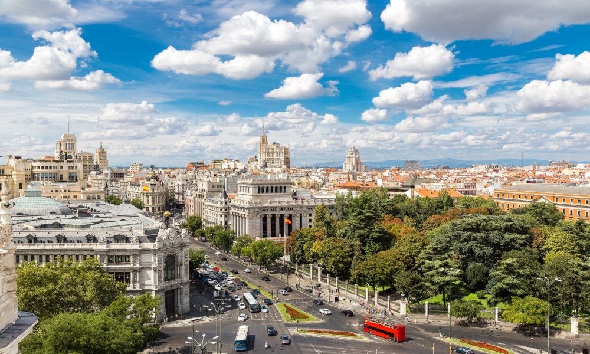

Мадрид (шп. Madrid) је главни град Краљевине Шпаније и аутономне заједнице Мадрид. Регион (Мадрид са околином) се са око 5 милиона становника убраја у највеће европске метрополе. Сам град Мадрид (без предграђа) је са својих 3,1 милион становника, после Лондона и Берлина, трећи највећи град у Европској унији. Мадрид је, како од националног, тако и од интернационалног значаја за трговину и финансије и политички је и културни центар Шпаније. Главни град је средиште шпанске управе, па осим краља, у њему живе католички бискуп и важни припадници владе и војске. Овде је смештено шест универзитета, разне високе школе, многа позоришта, музеји и друге културне установе.
